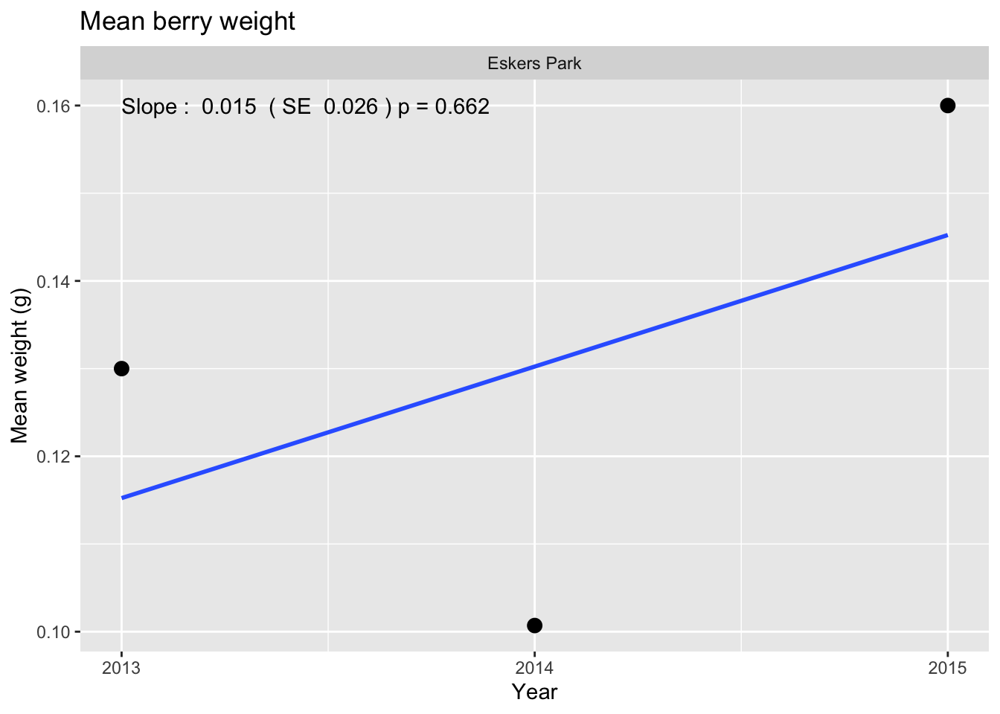
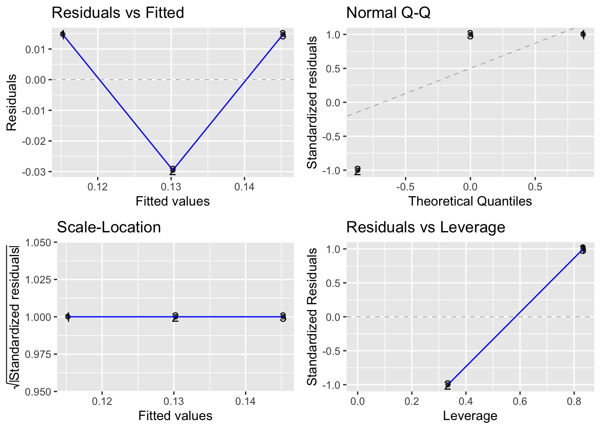
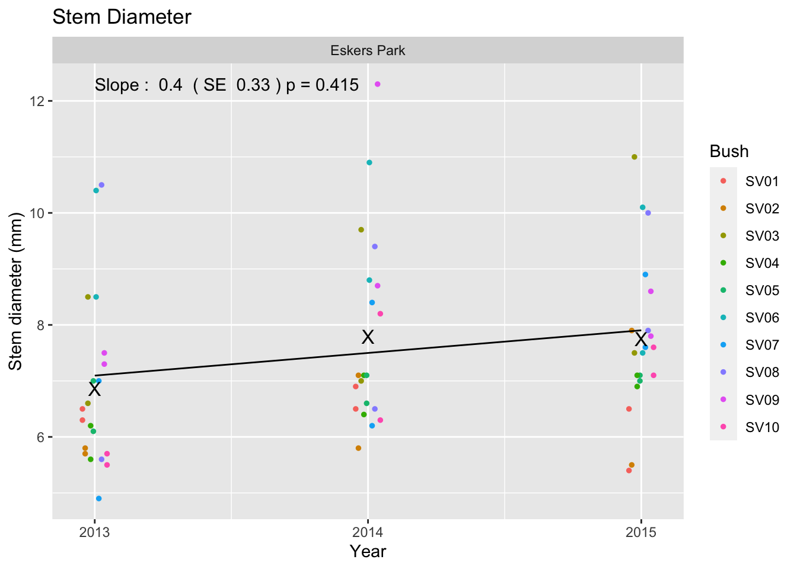
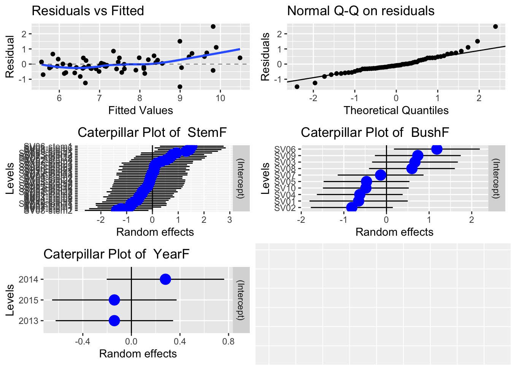
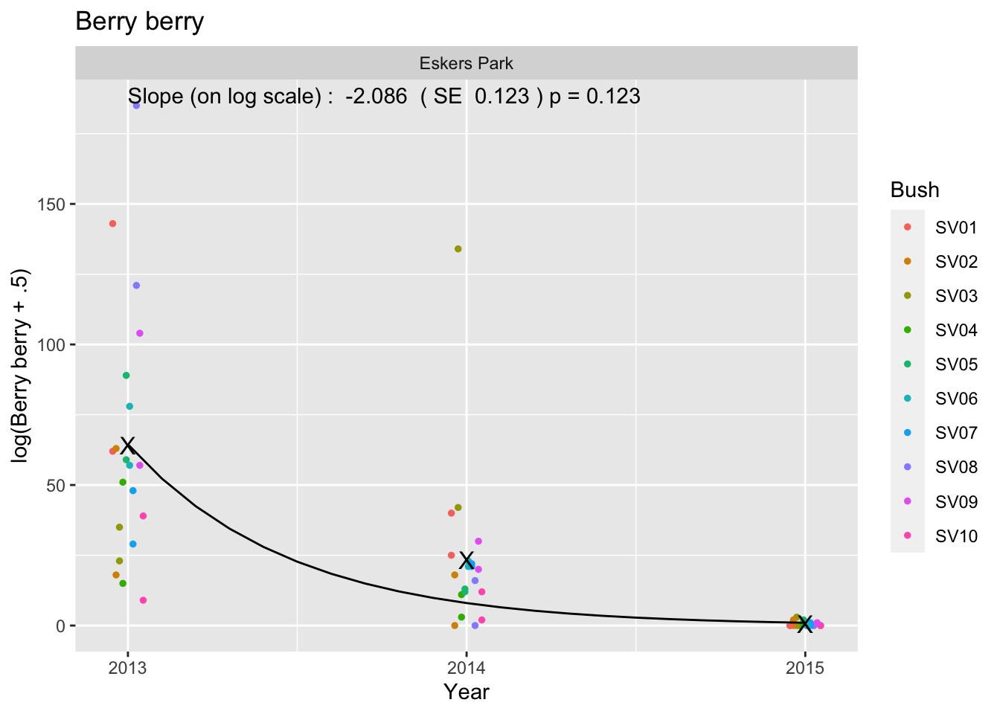
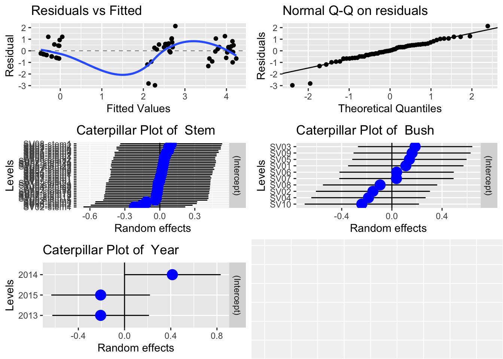

Soap Berry - LTEM - Eskers
1 Summary of Soap Berry LTEM protocol
1.1 Basic protocol
Areas rich in soapberries is located for permanent monitoring. In each area, 10 robust bushes are chosen, and two stems on each plant are chosen for sampling. The stems and bushes are marked with permanent tags so that they can be revisited each year.
There are three measures taken in this protocol.
- Berry count. The number of berries produced on the stem is recorded as an index of soapberry production.
- Stem diameter. The diameter (in millimeters) of the stem near its base is measured.
- Mean berry weight. A collection of 25-50 ripe red berries is obtained in August and weighed so the average wet weight of a single berry from each area is obtained.
If the tagged stem has died (or is damaged or the tag on the stem has “disappeared”), a new stem is chosen. This may be from a new bush or the same bush. If the stem has been browsed, then no count is conducted on this stem this year.
If the tagged bush has died (or the tags on all of the stems have “disappeared”), a new bush is selected for subsequent monitoring.
1.2 Cautions about the protocol.
1.2.1 Don’t use 0 to indicate a missing value.
If a branch is present but the berries cannot be counted (e.g. browsed), a standardized codes should be entered into the data base. The berry count should be entered as MISSING rather than as zero.
1.2.2 Codes for stem and bushes.
The Current field uses a plantxx-stemxx notation (e.g. plant1-stem1). If a bush dies and is replaced by a new bush, a different “plant” number should be used. Similarly if a stem is replaced on the same plant, use a different stem number (but linked to the same bush). If a new stem on new bush is used, both the plant (bush) and stem number should be new. Do NOT reuse bush numbers on different bushed; do not reuse stem numbers on the same bush.
1.3 Database structure
The database for this protocol is a series of Excel workbooks with multiple sheets in each workbook available at: GIVE URL HERE
The General Survey sheet contains the information collected. There is one line per stem.
The relevant fields on the worksheet are:
- Study Area Name. The name of the study area.
- Sample Station Label. The bush/stem label.
- Date. The date the data was collected. The Year is extracted from this date.
- Berry Count. The number of soap berries on this stem. If the stem is browed (or damaged) a missing value should be entered here and not the value of 0.
- Stem Diameter. The diameter (mm) of the stem.
- Average Weight. The average weight of a sample of berries is collected. Notice that there is only ONE mean weight found so this value is replicated on every stem line of the sheet. The sample size used to determine the weight is in a separate column.
2 Reading and checking the data
The database was read for all record pertaining to the Eskers. The following files were found:
File names with the data file.name
1 EskersPark2013.csv
2 EskersPark2014.csv
3 EskersPark2015.csvThese workbooks were read using R:
Reading in workbook : EskersPark2013.csv
Reading in workbook : EskersPark2014.csv
Reading in workbook : EskersPark2015.csv The following data editing was performed
2.1 Variables names corrected for R
Variable names in R must start with a letter and contain letters or numbers or underscores. Blanks in variable names are not normally allowed, nor are special characters such as %. These are normally replaced by periods (“.”) in the variable name.
Original variable names in data frame [1] "file.name" "Study.Area.Name" "Sample.Station.Label"
[4] "Date" "Time" "End.Time"
[7] "Surveyor" "Species" "Count"
[10] "UTM.Zone" "Easting" "Northing"
[13] "Comments" "Inventory.Method" "Berry.count"
[16] "Stem.diameter..mm." "Average.weight..gms." "N.for.Weight"
[19] "Fate"
Corrected variable names of data frame [1] "file.name" "Study.Area.Name" "Sample.Station.Label"
[4] "Date" "Time" "End.Time"
[7] "Surveyor" "Species" "Count"
[10] "UTM.Zone" "Easting" "Northing"
[13] "Comments" "Inventory.Method" "Berry.count"
[16] "Stem.diameter..mm." "Average.weight..gms." "N.for.Weight"
[19] "Fate" 2.2 Dates converted to standardized form
The number of records by year are Year
Study.Area.Name 2013 2014 2015
Eskers Park 20 20 0
ESKERS PARK 0 0 202.3 Checking Study Area Name
The Study Area Name should be recorded consistently across years, otherwise it may indicate that different sites are being studies. The study area name is converted to Title Case.
The list of Study Area Names by year in the data is:
Year
Study.Area.Name 2013 2014 2015
Eskers Park 20 20 202.4 Checking species code
The species code should be the same across the file.
Year
Species 2013 2014 2015
SHEPCAN 20 20 0
Sheperdia canadensis 0 0 20*** WARNING *** More than one species name found
The number of records by species and year are Year
Species 2013 2014 2015
SHEPCAN 20 20 0
Sheperdia canadensis 0 0 202.5 Extract the bush and stem numbers
The bush and stem numbers need to be extracted. Currently, the bush # is the portion of the Sample.Station.Label up to the dash, and the stem number follows the bush.
Bush should be followed for several years in a row, and the label for the bush should not be replicated if the bush is replaced by a new bush. This needs to be check in the tables below:
Year
Sample.Station.Label 2013 2014 2015
SV01-stem1 1 1 1
SV01-stem2 1 1 1
SV02-stem1 1 1 0
SV02-stem2 1 0 0
SV02-stem2a 0 1 0
SV02-stem3 0 0 1
SV02-stem4 0 0 1
SV03-stem1 1 1 0
SV03-stem2 1 1 0
SV03-stem5 0 0 1
SV03-stem6 0 0 1
SV04-stem1 1 1 0
SV04-stem2 1 1 0
SV04-stem7 0 0 1
SV04-stem8 0 0 1
SV05-stem1 1 1 0
SV05-stem10 0 0 1
SV05-stem2 1 1 0
SV05-stem9 0 0 1
SV06-stem1 1 1 0
SV06-stem11 0 0 1
SV06-stem12 0 0 1
SV06-stem2 1 1 0
SV07-stem1 1 1 0
SV07-stem13 0 0 1
SV07-stem14 0 0 1
SV07-stem2 1 1 0
SV08-stem1 1 1 0
SV08-stem15 0 0 1
SV08-stem16 0 0 1
SV08-stem2 1 1 0
SV09-stem1 1 1 0
SV09-stem2 1 1 0
SV09-stem21 0 0 1
SV09-stem22 0 0 1
SV10-stem1 1 1 0
SV10-stem2 1 1 0
SV10-stem23 0 0 1
SV10-stem24 0 0 1 Bush
Sample.Station.Label SV01 SV02 SV03 SV04 SV05 SV06 SV07 SV08 SV09 SV10
SV01-stem1 3 0 0 0 0 0 0 0 0 0
SV01-stem2 3 0 0 0 0 0 0 0 0 0
SV02-stem1 0 2 0 0 0 0 0 0 0 0
SV02-stem2 0 1 0 0 0 0 0 0 0 0
SV02-stem2a 0 1 0 0 0 0 0 0 0 0
SV02-stem3 0 1 0 0 0 0 0 0 0 0
SV02-stem4 0 1 0 0 0 0 0 0 0 0
SV03-stem1 0 0 2 0 0 0 0 0 0 0
SV03-stem2 0 0 2 0 0 0 0 0 0 0
SV03-stem5 0 0 1 0 0 0 0 0 0 0
SV03-stem6 0 0 1 0 0 0 0 0 0 0
SV04-stem1 0 0 0 2 0 0 0 0 0 0
SV04-stem2 0 0 0 2 0 0 0 0 0 0
SV04-stem7 0 0 0 1 0 0 0 0 0 0
SV04-stem8 0 0 0 1 0 0 0 0 0 0
SV05-stem1 0 0 0 0 2 0 0 0 0 0
SV05-stem10 0 0 0 0 1 0 0 0 0 0
SV05-stem2 0 0 0 0 2 0 0 0 0 0
SV05-stem9 0 0 0 0 1 0 0 0 0 0
SV06-stem1 0 0 0 0 0 2 0 0 0 0
SV06-stem11 0 0 0 0 0 1 0 0 0 0
SV06-stem12 0 0 0 0 0 1 0 0 0 0
SV06-stem2 0 0 0 0 0 2 0 0 0 0
SV07-stem1 0 0 0 0 0 0 2 0 0 0
SV07-stem13 0 0 0 0 0 0 1 0 0 0
SV07-stem14 0 0 0 0 0 0 1 0 0 0
SV07-stem2 0 0 0 0 0 0 2 0 0 0
SV08-stem1 0 0 0 0 0 0 0 2 0 0
SV08-stem15 0 0 0 0 0 0 0 1 0 0
SV08-stem16 0 0 0 0 0 0 0 1 0 0
SV08-stem2 0 0 0 0 0 0 0 2 0 0
SV09-stem1 0 0 0 0 0 0 0 0 2 0
SV09-stem2 0 0 0 0 0 0 0 0 2 0
SV09-stem21 0 0 0 0 0 0 0 0 1 0
SV09-stem22 0 0 0 0 0 0 0 0 1 0
SV10-stem1 0 0 0 0 0 0 0 0 0 2
SV10-stem2 0 0 0 0 0 0 0 0 0 2
SV10-stem23 0 0 0 0 0 0 0 0 0 1
SV10-stem24 0 0 0 0 0 0 0 0 0 12.6 Extract sample size and the mean berry weight
N.for.Weight
Year 25 27
2013 20 0
2014 0 20
2015 20 0Some berry counts appear to be missing or non-numeric Study.Area.Name Sample.Station.Label Date Berry.count Berry.count.new
59 Eskers Park SV09-stem22 2015-07-15 NA NA2.7 Check the comments
The comments recorded should be reviewed in case these indicate problems with the data, For example, if the comment is “heavily browsed” make sure that the Berry.count is recorded as NA and not as 0.
Berry.count
Comments 0 1 2 3 9 11 12 13 15 16 18 20 21 22 23
13 3 2 1 0 0 0 0 0 0 0 0 0 0 0
average weight based on N = 27 2 0 1 1 0 1 2 1 0 1 1 1 2 1 1
average weight based on N=26 0 0 0 0 1 0 0 0 1 0 1 0 0 0 1
Heavily browsed 0 0 0 0 0 0 0 0 0 0 0 0 0 0 0
Berry.count
Comments 25 29 30 35 39 40 42 48 51 57 59 62 63 78 89
0 0 0 0 0 0 0 0 0 0 0 0 0 0 0
average weight based on N = 27 1 0 1 0 0 1 1 0 0 0 0 0 0 0 0
average weight based on N=26 0 1 0 1 1 0 0 1 1 2 1 1 1 1 1
Heavily browsed 0 0 0 0 0 0 0 0 0 0 0 0 0 0 0
Berry.count
Comments 104 121 134 143 185 <NA>
0 0 0 0 0 0
average weight based on N = 27 0 0 1 0 0 0
average weight based on N=26 1 1 0 1 1 0
Heavily browsed 0 0 0 0 0 1 Year
Comments 2013 2014 2015
0 0 19
average weight based on N = 27 0 20 0
average weight based on N=26 20 0 0
Heavily browsed 0 0 13 Single Site Analysis
Date for the Eskers are available from 2013 to 2015.
This design has multiple transects that are repeated measured over time with multiple plots measured on each transect that are also repeated measured over time. Please refer to the Fitting Trends with Complex Study Designs document in the CommonFile directory for information on fitting trends with complex study designs.
All analyses were done using the R (R Core Team, 2022) analysis system. All plots are also saved as separate *png files for inclusion into other reports.
3.1 Mean berry weight.
This measurement is taken at the site level and so there is one measurement available per site/year. Notice that this value is replicated multiple times in the database for each individual stem. These are NOT real replicated readings but only an artifact of the database so some care is needed to extract only a single value per individual stem on a site/year.
A simple linear regression is used to look for changes over time using the model (in standard notation)
\[MBW \sim Year\]
where
- \(MBW\) is the mean berry weight and
- \(Year\) is the calendar year over time.
This model can be fit using the lm() function in R.
Figure 1 shows a summary plot, along with estimates of the slope, its standard error, and the p-value of the hypothesis of no trend. With 3 years of data, the estimated slope is 0.015 (SE 0.026) g/year (p = 0.662).


Residual plots are presented in (Figure 2). With only 3 years of data, the plots are not very informative. In the upper left corner is a plot of residuals vs. the fitted values. A good plot will show a random scatter around 0. Any large deviations from 0 should be investigated as potential outliers. In the upper right is a normal probability plot. Points should be close to the dashed reference line. Fortunately, the analysis is fairly robust against non-normality so only extreme departures are worrisome. The bottom left plot examine the assumption that the variation about the line is constant over the line. You would expect to see a constant band of points. Finally the bottom right plot is a leverage plot – this is not useful for this simple model and can be ignored.
It will also be possible to covariates such as mean winter temperature or degree days in the year to try and explain some of the variation over time using a multiple regression. With only 3 years of data available, this not sensible.
Whenever an analysis of a trend over time is conducted, the analysis should test and adjust for autocorrelation. Autocorrelation usually isn’t a problem (and likely cannot be detected) unless you have 10+ years of data. The test for autocorrelation commonly used is the Durbin-Watson test and we find (p = 0.408 for the test of no autocorrelation.
If the number of berries used to compute the average is quite different over years, a weighted analysis (number of berries used in computing the mean) may be needed.
3.2 Stem Diameter.
This measurement is taken at the stem level and so there is one value per stem/bush/year. The same stem is repeatedly measured over time, but stems may leave the protocol (damaged or dead) or be added to the protocol (replacement stem) over time. All of the models below automatically will account for stems that are removed or added as long as each stem has a unique label within a site.
A linear mixed model will be used to look for changes over time to account for the repeated measurements over time of each branch on the same plant:
\[StemD \sim Year + YearF(R) + Bush(R)+ Stem(R)\]
where
- \(StemD\) is the measured stem diameter,
- \(Year\) is the trend;
- \(YearF(R)\), \(BushF(R)\), and \(StemF(R)\) are the random effects of year-specific factors, bushes and stems respectively. These random effects are needed to account for the repeated measurement of the same stem (the \(StemF(R)\)) term; multiple stems measured from the same plant (\(BushF(R)\)) term; and year-specific factors (also known as process error, \(YearF(R)\)). The process error term is distinguished from the simple trend term \(Year\).
For example, all of the stems on the same bush may have related diameters because they are all similar aged. Similarly, the repeated measurements on the same stem over time will be related.
This model is fit using the lmer() function in the lmerTest package (Kuznetsova, et al. 2016) and a summary is shown in Figure 3.
Figure 3 shows a summary plot, along with estimates of the slope, its standard error, and the p-value of the hypothesis of no trend. With 3 years of data, the estimated slope is 0.404 (SE 0.334) g/year (p = 0.415).
Note that because of the presence of process error, the effective sample for testing a trend is the number of YEARS and not the total number of observations, i.e. the three X’s essentially define the trend, while the other data points provide information about bush-to-bush variation and stem-to-stem variation, they provide little information on trend.
Study.Area.Name Year mean.stem
1 Eskers Park 2013 6.860
2 Eskers Park 2014 7.795
3 Eskers Park 2015 7.750
One of the outputs from this analysis is the relative size of the standard deviations in the points due to year-specific factor, bushes, stems within bushes, and residual (unknown) sources (Table 1).
Source | SD |
|---|---|
Stem | 0.969 |
Bush | 0.880 |
Year | 0.393 |
Residual | 0.842 |
The stem-to-stem variation (within a bush) is comparable to the bush-to-bush variation and residual variation and all are much larger than year-specific effect (process error). This is not too surprising because it is hard to imagine that stem diameter could be readily influenced by year-specific factors (unlike, for example, berry counts).

Residual plots are presented in (Figure 4). The upper two plots are interpreted in the same way as noted previously. There is some (very weak) evidence of a lack of fit for stems with larger diameters. but it is not serious. Caterpiller plots attempt to show the distribution of the random effects. If the model fits well, you would expect the blue dots (the estimated random effect) to lie mostly in the \(\pm 2\) standard deviation bands with no obvious outliers. There are no obvious outliers in the stem or bush random effects and there are too few years to say much.
As with the analysis of mean berry weight, covariates can also be added to the model to explain some of the year-specific effects.
Whenever an analysis of a trend over time is conducted, the analysis will have to test and adjust for autocorrelation in the year-specific effect. This usually isn’t a problem unless there are 10+ years of data. Autocorrelation usually isn’t a problem (and likely cannot be detected) unless you have 10+ years of data. The test for autocorrelation commonly used is the Durbin-Watson test and we find p is Not avail for the test of no autocorrelation.
3.3 Berry Count.
This measurement is taken at the stem level and so there is one value per stem/plant/year. The same stem/plant is repeated measured over time. All of the models below automatically will account for branches that are removed or added as long as each stem has a unique label within a site.
The models for the berry count are similar to those from the stem diameter except that the counts may be somewhat smallish. The average count is about 5 or less, then a Poisson regression can, in theory, be used. However, if there are several random effects, then a Poisson mixed effects model is extremely difficult to fit. However, for larger counts, a linear mixed model on the log(counts+0.5) will work well and avoid many of the problems in dealing with generalized linear mixed models. A linear mixed model will be used to look for changes over time in the mean berry count to account for the repeated measurements over time of each branch on the same plant:
\[log(BerryCount+0.5) \sim Year + YearF(R) + Bush(R)+ Stem(R)\]
where
- \(BerryCount\) is the measured berry count on the stem,
- \(Year\) is the trend;
- \(YearF(R)\), \(BushF(R)\), and \(StemF(R)\) are the random effects of year-specific factors, bushes and stems respectively. These random effects are needed to account for the repeated measurement of the same stem (the \(StemF(R)\)) term; multiple stems measured from the same plant (\(BushF(R)\)) term; and year-specific factors (also known as process error, \(YearF(R)\)). The process error term is distinguished from the simple trend term \(Year\).
This model is fit using the lmer() function in the lmerTest package (Kuznetsova, et al. 2016) and a summary is shown in Figure 5.
[1] 0 185Figure 5 shows a summary plot, along with estimates of the slope, its standard error, and the p-value of the hypothesis of no trend in the mean berry count. With 3 years of data, the estimated slope is -2.086 (SE 0.415) g/year (p = 0.123).
** Generalize text here **. Despite the apparent step drop in mean berry production, there is no evidence of a trend. Even though the SE of the estimated slope is quite small, there are only 3 years of data which leaves only a single degree of freedom in computing the confidence interval and the multiplier is much larger than the approximate of 2.
Note that because of the presence of process error, the effective sample for testing a trend is the number of YEARS and not the total number of observations, i.e. the three X’s essentially define the trend, while the other data points provide information about bush-to-bush variation and stem-to-stem variation, they provide little information on trend.
Study.Area.Name slope slope.se p.value
Year Eskers Park -2.086201 0.1230613 0.1230613 Study.Area.Name Year mean.berry
1 Eskers Park 2013 64.2500000
2 Eskers Park 2014 23.2500000
3 Eskers Park 2015 0.5263158 Study.Area.Name Year pred.mean
1 Eskers Park 2013.0 64.45032
2 Eskers Park 2013.1 52.31456
3 Eskers Park 2013.2 42.46391
4 Eskers Park 2013.3 34.46811
5 Eskers Park 2013.4 27.97789
6 Eskers Park 2013.5 22.70975
One of the outputs from this analysis is the relative size of the standard deviations in the berry counts due to year-specific factor, bushes, stems within bushes, and residual (unknown) sources (Table 2).
Source | SD |
|---|---|
Stem | 0.235 |
Bush | 0.277 |
Year | 0.544 |
Residual | 0.937 |
The stem-to-stem variation (within a bush) is comparable to the bush-to-bush variation and residual variation and all are much larger than year-specific effect (process error). This is not too surprising because it is hard to imagine that stem diameter could be readily influenced by year-specific factors (unlike, for example, berry counts).

Residual plots are presented in (Figure 6). The upper two plots are interpreted in the same way as noted previously. There is some (very weak) evidence of a lack of fit for stems with larger diameters. but it is not serious. Caterpiller plots attempt to show the distribution of the random effects. If the model fits well, you would expect the blue dots (the estimated random effect) to lie mostly in the \(\pm 2\) standard deviation bands with no obvious outliers. There are no obvious outliers in the stem or bush random effects and there are too few years to say much.
As with the analysis of mean stem diameter, covariates can also be added to the model to explain some of the year-specific effects.
Whenever an analysis of a trend over time is conducted, the analysis will have to test and adjust for autocorrelation in the year-specific effect. This usually isn’t a problem unless there are 10+ years of data. Autocorrelation usually isn’t a problem (and likely cannot be detected) unless you have 10+ years of data. The test for autocorrelation commonly used is the Durbin-Watson test and we find p is Not avail for the test of no autocorrelation.
4 Summary
Some caution is needed about the interpretation of the slope in these short time series. Here most of the stems/bushes were measured for at least two years, so the above trend lines may represent nothing more than normal growth in stems as the bushes mature or senescence in berry production and berry weight as stem age. As an analogy, consider measuring the heights of children as they grow up. If the same cohort of children is repeated measured, you would expect to see a positive trend for many years simply as an artifact of the maturation. It may turn out that stem diameter is a surrogate for the stem age which, in turn could be a predictor for the berry count but at the moment there is insufficient information to know if this happens.
One way to deal with this problem is to NOT repeatedly sample the same bushes/stems over time. By taking a new sample each year (hopefully randomly selected), the variation in age in the sample should be similar over time (assuming that the soap berry plants are in “steady state”).
For this reason, this analysis protocol should be revisited after about 10 years to see if a more appropriate analysis may be more suitable when more data are collected and there are many plants that have been measured for many years. At the moment, there appears to be sufficient turnover in the three years that this issue may be moot.
5 References
Kuznetsova A, Brockhoff PB, Christensen RHB (2017). lmerTest Package: Tests in Linear Mixed Effects Models. Journal of Statistical Software, 82, 1-26. doi:10.18637/jss.v082.i13
R Core Team (2022). R: A language and environment for statistical computing. R Foundation for Statistical Computing, Vienna, Austria. https://www.R-project.org/.